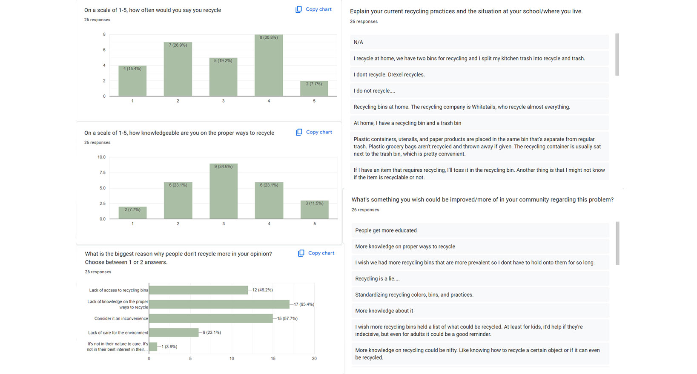
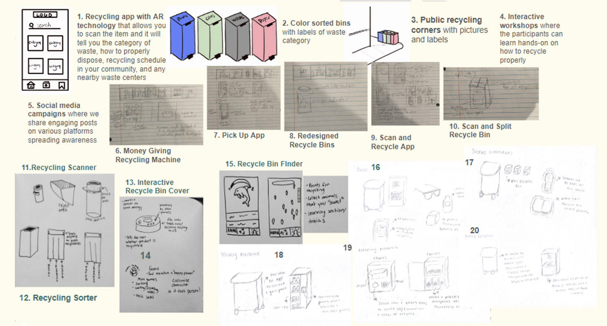

For a product design class, I worked with 3 team members to pitch a hypothetical multimedia product to help a problem in the community. For this month-long project, our goal was to help educate people on how to properly recycle and encourage people to do it more. We researched using news articles and surveys to truly understand how audiences see the problem. I was tasked with sketching prototypes and designing the mobile app using Figma.
Our target audience was college students so we conducted a survey that was passed around Drexel’s campus to gather a diverse pool of answers. In the end, the majority of students agreed about recycling.
Most students said they lack knowledge when it comes to recycling and that they find it an inconvenience to recycle. Those two problems became the starting block for our solution.

The team created 20 different sketches and ideas for our product. We took the best ideas from this sample to create our final products. I mainly focused on creating sketches for the mobile app as that was my job on the team.
This was the final design I came up with for the app. I used green and a neutral beige to give users an environmentally friendly look. Like a lot of other products that promote helping the environment. The app allows users to connect to a recycling bin and recycle the products correctly. They can scan the item and the app will tell users how to prep the item for recycling. This app also rewards the users with points that they can use to purchase items from a vending machine.
I would take more time making the design cleaner. While it is a prototype, I think the cleaner environment aesthetic could be brought across clearer. I would also have liked to implement a way to make the features work on the prototype.